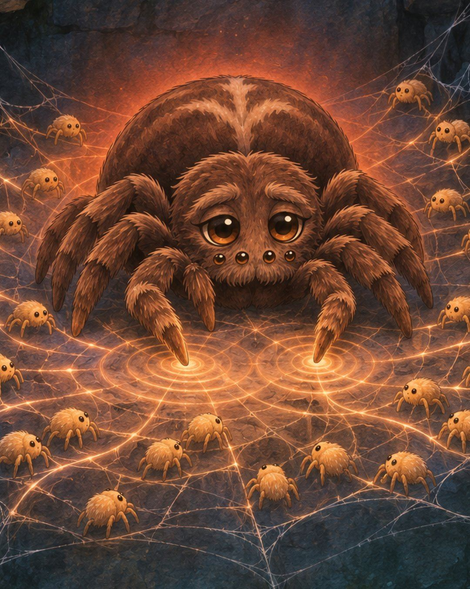
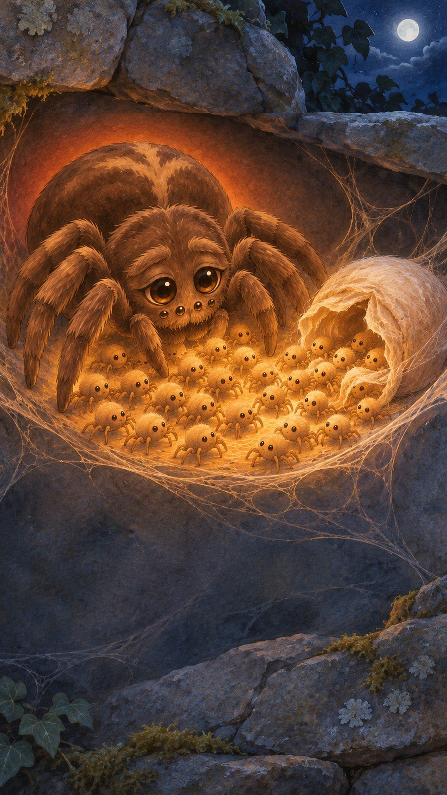
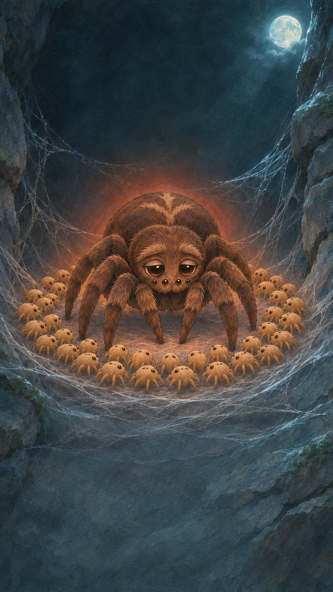
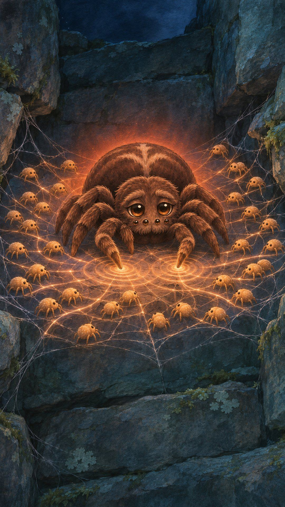
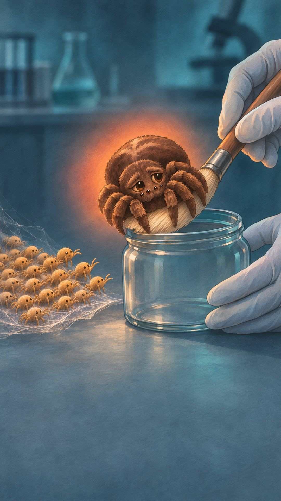
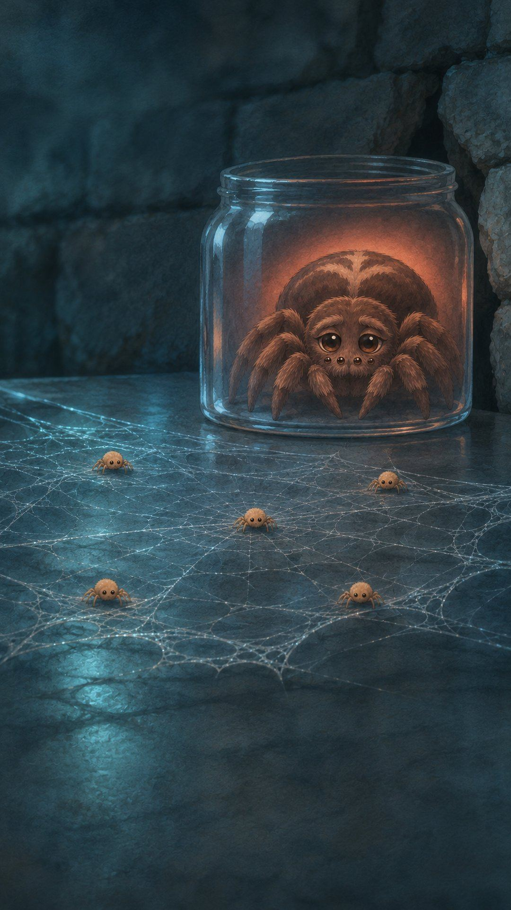

Her babies are eating her alive
Her babies are eating her alive.
And she’s the one who started it.

Her eggs hatch, and the babies are hungry.

So she lays more eggs, just for them to eat.
Then she has only one thing left to give.

She drums on the web.

The babies climb on her, and bite.
She doesn’t run.
In a few hours, she’s gone.
Scientists took some mothers away.
Those mothers lived.

But their babies came out smaller, and more of them died.

Based on real research: this is what black lace-weaver spiders (Amaurobius ferox) really do. The pictures are made, not filmed. Research: Kim & Horel 1998; Kim, Roland & Horel 2000, Ethology.